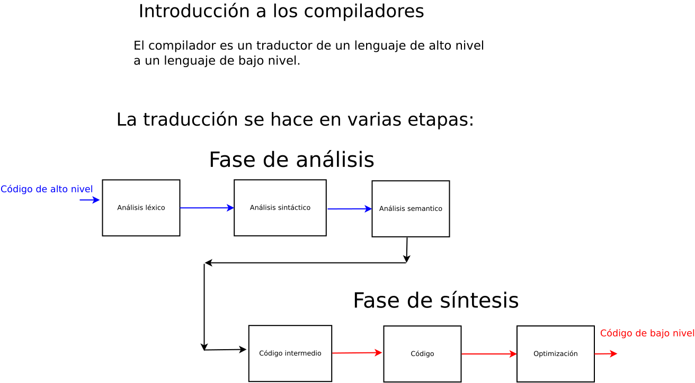

Análisis léxico: Introducción
En computación se requiere que la computadora entienda el código de entrada. para poder hacer esto se requiere traducir el lenguaje de entrada a un lenguaje que la computadora entienda. Esta traducción se hace de dos maneras: por medio de un compilador o por medio de un intérprete.
Del diccionario de la Real Academia Española
2. m. Información. Compilador. Programa que compila.
2. tr. Información. Compilar. Convertir un programa en lenguaje máquina a partir de otro programa de computadora escrito en otro lenguaje.
3.m. Información. Traductor. Programa que traduce textos de una lengua a otra o realiza la conversión de un sistema de comunicación a otro.
2. m. y f. Intérprete. Persona que explica a otras, en lengua que entienden, lo dicho en otra que les es deconocida.
1. m. Lenguaje. Facultad del ser humano de expresarse y comunicarse con los demás a través del sonido articulado o de otros sistemas de signos.
7. m. Inform. Lenguaje. Conjunto de signos y reglas que permite la comunicación con una computadora.
1. m. Inform. Lenguaje máquina. Conjunto de instrucciones codificadas que una computadora interpreta y ejecuta directamente.
Máquina virtual
Máquina virtual. Las máquinas virtuales son ordenadores de software que proporcionan la misma funcionalidad que los ordenadores físicos. Como ocurre con los ordenadores físicos, ejecutan aplicaciones y un sistema operativo. (Tomado de https://www.vmware.com)
Bytecode. Es el conocido (y complicado) lenguaje ensamblador, donde podemos especificar unas instrucciones básicas de bajo nivel que se convierten directamente a código binario, que son operaciones que realiza directamente la CPU del ordenador. (Tomado de https://www.adictosaltrabajo.com)
Representación del conjunto de signos
Pizarrón, archivo dia: SNCompiladores/TeoriaConjuntos1Sintaxis.dia
Uso de la arquitectura para definir traductores
Traducción por medio de un compilador
Pizarrón, archivo dia: SNCompiladores/PizarronClaseIntroduccion.dia

Fases de un compilador
Pizarrón, archivo dia: SNCompiladores/FaseCompiladorAnalisis.dia
Pizarrón, archivo dia: SNCompiladores/FaseCompiladorSintesis.dia
Etapas de un compilador
Pizarrón, archivo dia: SNCompiladores/FaseLexica.dia
Pizarrón, archivo dia: SNCompiladores/EtapaSintexis.dia
Traducción por medio de un intérprete
Pizarrón, archivo dia: SNCompiladores/Interprete.dia
Pizarrón, archivo dia: SNCompiladores/Interprete1.dia
Traducción por medio de una máquina virtual